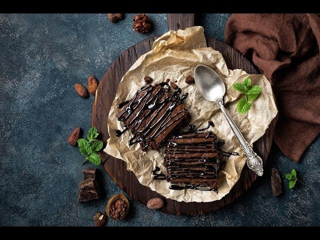

Brownies

Esta es una receta para preparar Brownies
Ingredientes
- Cacao en polvo sin azucar 60g
- Mantequilla sin sal 113g
- Huevo 2
- Azúcar 175g
-
- Harina repostería 30g
- Esencia de vainilla 5ml
- Sal una pizca
- Nueces picadas 125g
Pasos
- Precalentar el horno a 165°C y engrasar o
cubrir con palel sulfurizado un molde
cuadrado de unos 20 cm de lado.
- Derretir la mantequilla con el cacao en polvo,
removiendo a fuego lento hasta conseguir una mezacla
homogénea y suave. Retirar y dejar enfriar unos minutos.
- Echar la mecla en un recipiente mediano y añadir los huevos
uno a uno, y la vainilla, batiendo con unas varillas.
- En otro recipiente mezclar la harina con el azúcar, la sal
y las nueces. Incorporar a la mezcla con cacao, remover bien
pero con suavidad, hasta obtener una masa homogénea sin grumos secos.
- Llenar el molde y hornear durante unos 35-40 minutos. Esperar
a que se enfríe antes de cortar.